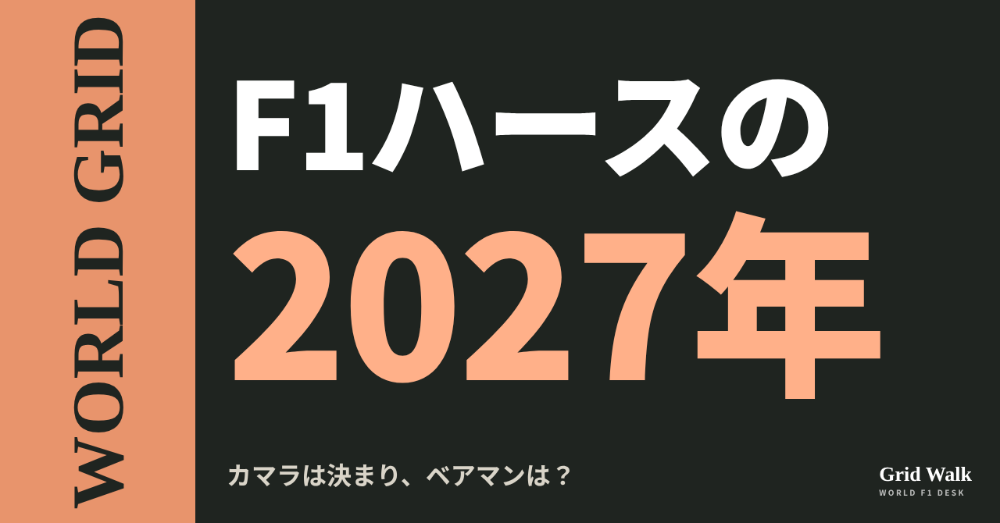
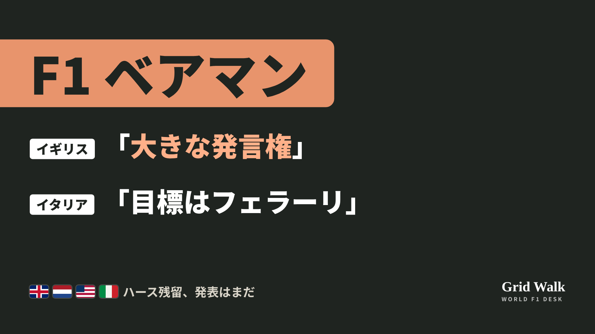

<meta charset="utf-8"><title>ベアマン残留 note貼り付け</title>
<style>
/* one column of numbered paste steps; text steps vs image steps differ by marker */
:root{--bg:#F5F4F0;--card:#FFFFFF;--ink:#1D2321;--mute:#5F665F;--line:#DCDAD2;--btn:#1F5FBF;--btnok:#2E8B4F;--img:#E9F3EC;--imgink:#22663B;--sans:'IBM Plex Sans JP','Hiragino Sans','Noto Sans JP',sans-serif}
@media (prefers-color-scheme:dark){:root:not([data-theme="light"]){--bg:#171A19;--card:#202423;--ink:#ECEDE8;--mute:#A3AAA2;--line:#343937;--btn:#4D8BE6;--btnok:#3FA866;--img:#1E2C23;--imgink:#8FD3A6;color-scheme:dark}}
:root[data-theme="dark"]{--bg:#171A19;--card:#202423;--ink:#ECEDE8;--mute:#A3AAA2;--line:#343937;--btn:#4D8BE6;--btnok:#3FA866;--img:#1E2C23;--imgink:#8FD3A6;color-scheme:dark}
body{background:var(--bg);color:var(--ink);font-family:var(--sans);font-size:15px;line-height:1.75;padding:20px 16px 60px}
main{max-width:680px;margin:0 auto;display:grid;gap:28px}
header h1{font-size:22px;margin:0 0 6px;text-wrap:balance}
header p{margin:0;color:var(--mute);font-size:14px}
nav{display:flex;gap:8px;flex-wrap:wrap;margin-top:12px}
nav a{border:1px solid var(--line);border-radius:999px;padding:4px 14px;color:var(--ink);text-decoration:none;font-size:14px;background:var(--card)}
.part h2{font-size:18px;line-height:1.5;margin:0 0 12px;text-wrap:balance;display:flex;gap:10px;align-items:baseline;flex-wrap:wrap}
.tag{font-size:13px;background:var(--ink);color:var(--bg);border-radius:6px;padding:1px 9px}
.steps{list-style:none;margin:0;padding:0;display:grid;gap:12px}
.st{background:var(--card);border:1px solid var(--line);border-radius:12px;padding:12px;min-width:0}
.hd{display:flex;align-items:center;gap:8px;margin-bottom:8px}
.no{width:26px;height:26px;border-radius:50%;background:var(--btn);color:#fff;display:inline-flex;align-items:center;justify-content:center;font-size:13px;font-weight:700;flex:0 0 26px}
.im .no{background:var(--btnok)}
.hd em{font-style:normal;font-size:12px;background:var(--img);color:var(--imgink);border-radius:6px;padding:0 8px}
.bx{font-size:13.5px;line-height:1.7;border:1px solid var(--line);border-radius:8px;padding:8px 10px;max-height:110px;overflow:auto;overflow-wrap:anywhere}
.bx.tall{max-height:150px}.bx p{margin:0 0 6px}.bx h2{font-size:14px;margin:8px 0 4px}.bx a{color:var(--btn)}
.st img{display:block;width:100%;max-width:100%;border:1px solid var(--line);border-radius:8px}
.sub{font-size:12.5px;color:var(--mute);margin:6px 0 0}
.cp{width:100%;margin-top:8px;padding:12px;border:0;border-radius:10px;background:var(--btn);color:#fff;font:600 15px var(--sans);cursor:pointer}
.cp.ok{background:var(--btnok)}.cp.dl{background:var(--btnok)}.cp:focus-visible{outline:3px solid var(--ink);outline-offset:2px}
.xh{font-size:15px;margin:20px 0 10px}
.fb{font-size:13px;line-height:1.7;margin:8px 0 0;padding:8px 10px;border-radius:8px;background:var(--img);color:var(--imgink)}
.opts{display:grid;grid-template-columns:repeat(auto-fill,minmax(240px,1fr));gap:10px}
.opt{min-width:0}.opt img{display:block;width:100%;border:1px solid var(--line);border-radius:8px}
.ol{display:flex;align-items:center;gap:8px;margin-top:6px}.ol b{font-size:13px;flex:0 0 auto}.ol .on{font-size:12.5px;color:var(--mute);flex:1;min-width:0}.ol .cp{width:auto;flex:0 0 auto;padding:9px 14px}.ol .cp{margin:0;padding:9px}
.toast{font-size:13px;color:var(--mute);margin-top:6px}
</style>
<main><header><h1>ベアマン残留 note貼り付け</h1><p>いま公開済みは1本です。青い番号は文章、緑は画像です。</p><nav><a href="#p1">1</a></nav></header><section class="part" id="p1"><h2><span class="tag">WORLD GRID</span>ベアマン残留の発表はなぜまだ？ 本人「フェラーリには大きな発言権」</h2><p class="sub">サイトに公開：18:43</p><ol class="steps">
<li class="st im"><div class="hd"><span class="no">1</span><b>見出し画像</b><em>画像</em></div><button class="cp dl" data-img="img/bearman-haas-contract-20261027.png" data-name="bearman-haas-contract-20261027_見出し画像.png">ダウンロード</button></li>
<li class="st"><div class="hd"><span class="no">2</span><b>タイトル</b></div><div class="bx" id="p1t">ベアマン残留の発表はなぜまだ？ 本人「フェラーリには大きな発言権」</div><button class="cp" data-plain="p1t">タイトルをコピー</button></li>
<li class="st"><div class="hd"><span class="no">3</span><b>本文</b></div><div class="bx tall" id="p1r"><p>ハースは10月15日、2027年にラファエル・カマラを走らせると発表しました。オコンの後任です。ところが、もうひとつの席のオリバー・ベアマンについては、まだ発表がありません。小松礼雄代表は「タイミングの問題」、ベアマン本人は「僕の手の外」。同じ話でも、国ごとの見出しはかなり違いました。</p><p>各国の見出しの違いと、元の記事へのリンクはサイトで → <a href="https://f1gridwalk.github.io/lens/bearman-haas-contract-20261027/?utm_source=note&amp;utm_campaign=bearman-haas-contract-20261027">https://f1gridwalk.github.io/lens/bearman-haas-contract-20261027/?utm_source=note&amp;utm_campaign=bearman-haas-contract-20261027</a></p><h2>代表は「タイミングの問題」</h2><p>カマラとの契約は複数年です（アメリカのRACER）。発表の日、小松代表は記者たちに、ベアマンとは続けるつもりだと話したうえで、こう付け加えました。</p><blockquote><p>「タイミングの問題にすぎません」（小松礼雄代表、ロイター／イギリス）</p></blockquote><p>ハースは2024年7月、ベアマンが2026年までチームで走ると発表していました（Motorsport Week）。2025年1月には、小松代表が契約を「2年、プラス1」と説明しています（PlanetF1）。オランダのRacingNews365によると、2027年の席でまだ正式に発表されていないのは、ベアマンの席とレーシングブルズの2席の、あわせて3つです。</p><h2>本人は「僕の手の外」</h2><p>アメリカGPを前にしたオースティンで、ベアマンはこう話しました。</p><blockquote><p>「残っている引っかかりは、僕の手の外のことで、どちらかといえば契約上の点です」「もちろん、僕の将来がどうなるかには、フェラーリには大きな発言権があります」（ベアマン、PlanetF1／イギリス）</p></blockquote><p>RacingNews365には「結局、僕はフェラーリの育成ドライバーで、それがここにいる理由です」とも。一方、小松代表はカマラの発表の日、ベアマンやカマラを取ったときのことをこう話していました（Sky Sports）。</p><blockquote><p>「どの時点でも、フェラーリから圧力をかけられたことはありません」「ドライバーは完全に自分たちで選んでいます。私と、オーナーのジーン・ハースで」（小松礼雄代表、Sky Sports／イギリス）</p></blockquote><h2>見出しは国ごとに</h2><p>イギリスのCrash.netとPlanetF1は、そろって「フェラーリに大きな発言権」を見出しにしました。</p><p>イタリアのAutomoto.itの見出しは「トップチームに値すると感じる　目標はフェラーリ」。GPFansによると、イタリアのガゼッタ・デロ・スポルトは10月17日、カマラとベアマンをハミルトンの後任の有力候補として並べ、「ハミルトンが永遠に走れるわけではないことは、誰もが知っている」と書いたと報じています。</p><p>オランダのGPblogの見出しは「ベアマン、ハースでの将来はまだ不確か　小松が説明」。ただ、記事の中の小松代表の言葉は、ベアマンと続けるつもりだという中身です。</p><h2>オースティンでは10秒</h2><p>アメリカGPの決勝は、24周でリタイアでした（F1公式の結果）。RacingNews365によると、VSCが明けたあと、ガスリーを抜いた際に左前のタイヤがガスリーの車に当たり、10秒加算のペナルティ。ベアマンは「ばかげている」「とても行き過ぎ」と反論しています。ガスリーは10位で1点を取りました。</p><p>編集部としては、2人の言葉を並べると、ドライバーを選ぶのはハース、契約の長さや条件にはフェラーリも関わる、という形が見えてくると見ています。イギリスとイタリアの見出しは「フェラーリ」に寄りましたが、ハースで続けるという点では、代表と本人の言葉はそろっています。今週末はメキシコシティGPです。</p><p><strong>ベアマンの発表が遅れているのは、ただのタイミングだと思いますか？</strong></p><p>━━━━━━━━━━</p><p><strong>F1 Grid Walk では、世界のF1ニュースを毎日日本語でまとめています。</strong></p><p>海外の記事の要約を、毎日載せています。</p><p><a href="https://f1gridwalk.github.io/">https://f1gridwalk.github.io/</a></p><p>ほかの海外記事も読みたい方は、F1 Grid Walkへ。</p><p><a href="https://f1gridwalk.github.io/lens/bearman-haas-contract-20261027/">https://f1gridwalk.github.io/lens/bearman-haas-contract-20261027/</a></p><p>━━━━━━━━━━</p><p><a href="https://www.thestar.com.my/sport/motorsport/2026/10/16/motor-racing-bearman-ready-to-step-up-as-team-leader-at-haas-f1-says-komatsu">出典：ロイター（The Star）（イギリス）</a></p><p><a href="https://www.gpblog.com/nl/nieuws/bearman-nog-altijd-niet-zeker-van-toekomst-bij-haas-komatsu-geeft-uitleg">出典：GPblog（オランダ）</a></p><p><a href="https://www.planetf1.com/news/ollie-bearman-future-haas">出典：PlanetF1（イギリス）</a></p><p><a href="https://www.planetf1.com/news/oliver-bearman-ferrari-haas-f1-2027-contract">出典：PlanetF1（イギリス）</a></p><p><a href="https://www.planetf1.com/news/oliver-bearman-ferrari-credentials-haas-explained">出典：PlanetF1（イギリス）</a></p><p><a href="https://motorsportweek.com/?p=194893">出典：Motorsport Week（イギリス）</a></p><p><a href="https://racingnews365.com/oliver-bearman-issues-firm-declaration-over-f1-future-amid-new-contract-delay">出典：RacingNews365（オランダ）</a></p><p><a href="https://www.heart.co.uk/news/sport/haas-boss-ayao-komatsu-dismisses-ferrari-b-te/">出典：Sky Sports（Heart）（イギリス）</a></p><p><a href="https://racer.com/2026/10/15/haas-f1-signs-rookie-camara-to-multi-year-contract-from-2027">出典：RACER（アメリカ）</a></p><p><a href="https://www.crash.net/f1/news/1108289/1/oliver-bearman-admits-ferrari-will-have-big-say-his-f1-future">出典：Crash.net（イギリス）</a></p><p><a href="https://www.automoto.it/formula1/f1-gp-austin-bearman-haas-contratto-ferrari-camara-f1.html">出典：Automoto.it（イタリア）</a></p><p><a href="https://www.gpfans.com/en/f1-news/1091688/lewis-hamilton-ferrari-replacement-battle-heats-up-as-two-f1-stars-emerge/">出典：GPFans（イギリス）</a></p><p><a href="https://racingnews365.com/oliver-bearman-questions-crazy-stewards-decision-after-launching-f1-attack">出典：RacingNews365（オランダ）</a></p><p><a href="https://www.formula1.com/en/results/2026/races/1297/united-states/race-result">出典：F1公式サイト（イギリス）</a></p></div><button class="cp" data-rich="p1r">本文をコピー</button></li>
<li class="st"><div class="hd"><span class="no">4</span><b>ハッシュタグ</b></div><div class="bx" id="p1h">#F1 #F1jp #ベアマン #ハース #カマラ #小松礼雄 #フェラーリ #F1移籍 #WORLDGRID</div><button class="cp" data-plain="p1h">タグをコピー</button></li>
</ol><h3 class="xh">X</h3><ol class="steps">
<li class="st im"><div class="hd"><b>X用の画像</b><em>画像</em></div><button class="cp dl" data-img="img/x_bearman-haas-contract-20261027.png" data-name="x_bearman-haas-contract-20261027.png">ダウンロード</button></li>
<li class="st"><div class="hd"><b>① noteをシェアするときの文</b></div><div class="bx" id="p1x0">ハースはカマラの起用を発表したのに、ベアマンの残留はまだ発表されていません。代表は「タイミングの問題」、本人は「フェラーリには大きな発言権」。イギリス・イタリア・オランダで見出しはどう違ったか、noteにまとめました #F1jp #ベアマン</div><button class="cp" data-plain="p1x0">コピー</button></li>
<li class="st"><div class="hd"><b>② ①への返信</b></div><div class="bx" id="p1x1">ほかの海外記事も読みたい方は、F1 Grid Walkへ。
https://f1gridwalk.github.io/lens/bearman-haas-contract-20261027/?utm_source=x&amp;utm_campaign=bearman-haas-contract-20261027</div><button class="cp" data-plain="p1x1">コピー</button></li>
<li class="st"><div class="hd"><b>③ ②への返信</b></div><div class="bx" id="p1x2">毎日の海外F1ニュースは、日本語でこちらにまとめています。
https://f1gridwalk.github.io/</div><button class="cp" data-plain="p1x2">コピー</button></li>
</ol></section></main><script>
function done(b,msg){const t=b.dataset.t||b.textContent;b.dataset.t=t;b.classList.add('ok');b.textContent=msg||'コピーしました';setTimeout(()=>{b.classList.remove('ok');b.textContent=t},2000)}
function selectEl(el){const r=document.createRange();r.selectNodeContents(el);const s=getSelection();s.removeAllRanges();s.addRange(r)}
async function rich(el,b){
  try{await navigator.clipboard.write([new ClipboardItem({'text/html':new Blob([el.innerHTML],{type:'text/html'}),'text/plain':new Blob([el.innerText],{type:'text/plain'})})]);done(b);return}catch(e){}
  selectEl(el);let ok=false;try{ok=document.execCommand('copy')}catch(e){}
  if(ok){getSelection().removeAllRanges();done(b)}else{done(b,'選択しました。コピーしてください')}}
async function plain(el,b){
  try{await navigator.clipboard.writeText(el.innerText);done(b);return}catch(e){}
  selectEl(el);let ok=false;try{ok=document.execCommand('copy')}catch(e){}
  if(ok){getSelection().removeAllRanges();done(b)}else{done(b,'選択しました。コピーしてください')}}
let dlns=null;(async()=>{try{dlns=await window.claude?.use?.("downloads")}catch(e){dlns=null}})();
async function img(src,b){
  b.dataset.t=b.dataset.t||b.textContent;
  if(!dlns){try{dlns=await window.claude?.use?.("downloads")}catch(e){}}
  if(!dlns){b.textContent='ダウンロードできませんでした';setTimeout(()=>{b.textContent=b.dataset.t},3500);return}
  try{const blob=await fetch(src).then(r=>r.blob());b.textContent='保存の確認を開いています…';
    await dlns.save({filename:b.dataset.name,data:blob});done(b,'ダウンロードしました')}
  catch(e){const c=e&&e.code;b.textContent=c==='declined'?'キャンセルしました':c==='rate_limited'?'少し待ってからもう一度押してください':'ダウンロードできませんでした';setTimeout(()=>{b.textContent=b.dataset.t},3500)}}
document.querySelectorAll('.cp').forEach(b=>b.addEventListener('click',()=>{
  if(b.dataset.rich)rich(document.getElementById(b.dataset.rich),b);
  else if(b.dataset.plain)plain(document.getElementById(b.dataset.plain),b);
  else img(b.dataset.img,b)}));
</script>